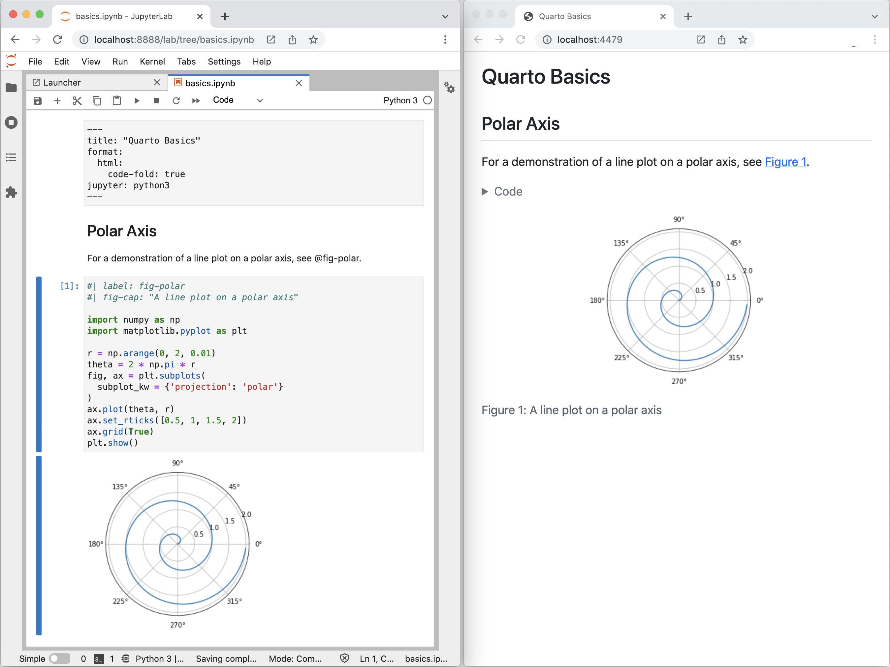
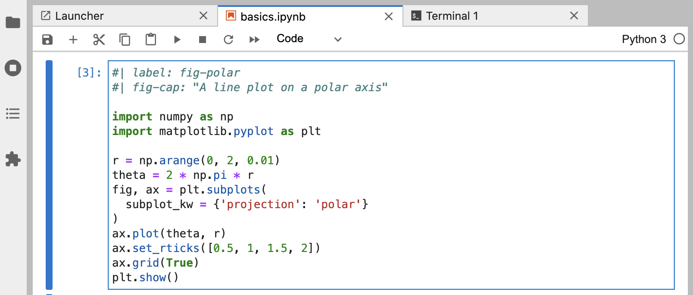
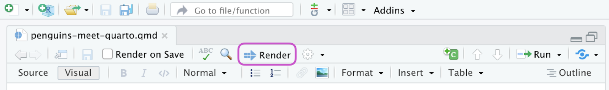
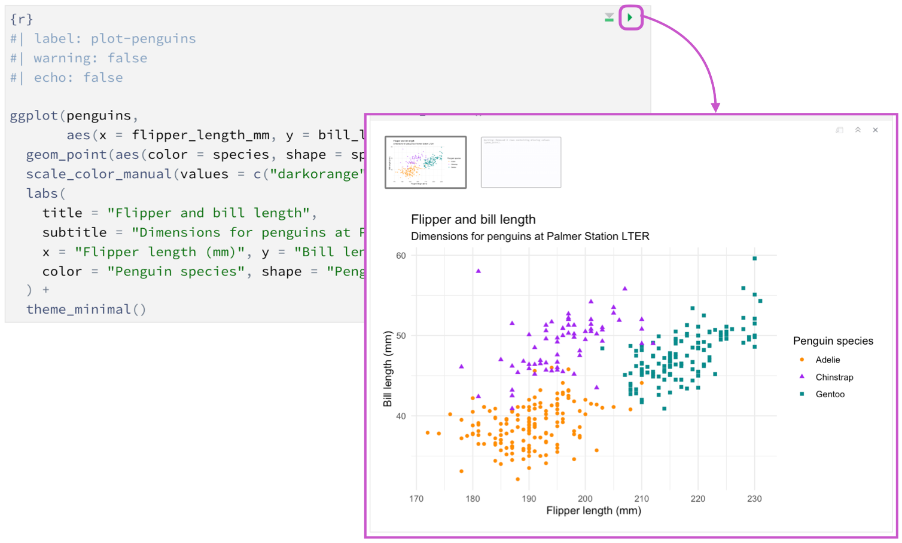

Tutorial: Hello, Quarto
Choose your tool
Overview
In this tutorial we’ll show you how to use Jupyter Lab with Quarto. You’ll edit code and markdown in Juptyer Lab just as you would with any notebook, and preview the rendered document in a web browser as you work.
Here’s how this will look:

The notebook is rendered into the HTML version you see on the right (it could have equally been rendered into PDF, MS Word, etc.).
This is the basic model for Quarto publishing—take a source document (in this case a notebook), and render it to a variety of output formats.
Rendering
We’ll start out by opening a notebook (polar-axis.ipynb) in Jupyter Lab and rendering it to a couple of formats. If you want to follow along step-by-step in your own environment, download this notebook:
Create a new directory to work within and copy the notebook into the directory. Switch to this directory in a terminal then then open Jupyter Lab so we can start working with the notebook:
| Platform | Command |
|---|---|
| Mac/Linux | |
| Windows | |

Create a new Terminal within Jupyter Lab that you’ll use for Quarto commands:

Now let’s render the notebook to a couple of formats:
quarto render polar-axis.ipynb --to html
quarto render polar-axis.ipynb --to docxAuthoring
The quarto render command is used to create the final version of your document for distribution. However, during authoring you’ll use the quarto preview command. Try it now from the Terminal with polar-axis.ipynb:
quarto preview polar-axis.ipynbThis will render your document and then display it a web browser:

Position Jupyter Lab and the browser preview side-by-side so you can see changes as you work:
Change some of the code, running the changed cell, then save the notebook. You’ll see that the preview updates immediately. This is the basic workflow for authoring with Quarto.
Cell Types
There are few different types of cells in our notebook, let’s work a bit with each type.
YAML Options
You are likely already familiar with markdown and code cells, but there is a new type of cell (“Raw”) that is used for document-level YAML options:

Try changing the code-fold option to false:
format:
html:
code-fold: falseThen save the notebook. You’ll notice that the code is shown above the plot (where previously it was hidden with a “Code” button that could be used to show it).
Markdown Cells
Markdown cells contain raw markdown that will be passed through to Quarto during rendering. You can use any valid Quarto markdown syntax in these cells. Here we specify a header and a cross-reference to the figure created in the code cell below:

Try changing the header and saving the notebook—the preview will update with the new header text.
Code Cells
Code cells you are of course already familiar with:

One new twist are the options you see at the top of the cell (label and fig-cap). Cell options are written in YAML using a specially prefixed comment (#|).
In this example, the cell options are used to make the figure cross-reference-able. Try changing the fig-cap and/or the code, running the cell, and then saving the notebook to see the updated preview.
There are a wide variety of cell options that you can apply to tailor your output. We’ll delve into these options in the next tutorial.
Overview
In this tutorial we’ll show you how to use RStudio with Quarto. You’ll edit code and markdown in RStudio just as you would with any computational document (e.g., R Markdown), and preview the rendered document in the Viewer tab as you work.
The following is a Quarto document with the extension .qmd (on the left) along with its rendered version as HTML (on the right). You could also choose to render it into other formats like PDF, MS Word, etc.

This is the basic model for Quarto publishing—take a source document (in this case a notebook), and render it to a variety of output formats. Want to give it a try? Download the following .qmd file, open it in RStudio, and click on  Render.
Render.
Rendering
Use the  Render button in the RStudio IDE to render the file and preview the output with a single click or keyboard shortcut (⇧⌘K).
Render button in the RStudio IDE to render the file and preview the output with a single click or keyboard shortcut (⇧⌘K).

If you prefer to automatically render whenever you save, you can check the Render on Save option on the editor toolbar. The preview will update whenever you re-render the document. Side-by-side preview works for both HTML and PDF outputs.

When rendering, Quarto generates a new file that contains selected text, code, and results from the .qmd file. The new file can be an HTML, PDF, MS Word document, presentation, website, book, interactive document, or other format.
You can also render the document using the functions from the quarto package, which provides an R interface to the Quarto CLI. For example, to render the current document, use quarto::quarto_render(). You can also specify the name of the document you want to render as well as the output format, e.g., quarto::quarto_render("penguins-meet-quarto.qmd", output_format = "pdf").
Authoring
In the earlier image, the source code (on the left) looks very similar to the rendered output (on the right) since we are viewing the file in the visual editor. Switching to the source editor reveals the plain text source code underlying the document.

The file contains three types of content.
YAML header
An (optional) YAML header emarcated by three dashes (---) on either end:

When rendered, the title , "Penguins, meet Quarto!", will appear at the top of the rendered document with a larger font size than the rest of the document. The other two YAML fields in denote that the output should be in html format and the document should open in the visual editor, by default.
The basic syntax of YAML uses key-value pairs in the format key: value. Other YAML fields commonly found in headers of documents include metadata like author, subtitle, date as well as customization options like theme, fontcolor, fig-width, etc. You can find out about all available YAML fields for HTML documents here. The available YAML fields vary based on document format, e.g., see here for YAML fields for PDF documents and here for MS Word.
Code chunks
R code chunks identified with {r} with (optional) chunk options, in YAML style, identified by #| at the beginning of the line:

In this case the label of the code chunk is load-packages and we set include to false to indicate that we don’t want the chunk itself or any of its outputs in the rendered documents.
In addition to rendering the complete document to view the results of code chunks you can also run each code chunk interactively in the RStudio editor by clicking the  icon. RStudio executes the code and displays the results either inline within your file or in the Console, depending on your preference.
icon. RStudio executes the code and displays the results either inline within your file or in the Console, depending on your preference.

Markdown text
Text with formatting, including section headers, hyperlinks, an embedded image, and an inline code chunk:

Quarto uses markdown syntax for text. If using the visual editor you won’t need to learn much markdown syntax for authoring your document as you can use the menus and shortcuts to add a header, bold text, insert a table, etc. If using the source editor, you can achieve these with markdown expressions like ##, **bold**, etc.
How it works
When you render a Quarto document, first knitr executes all of the code chunks and creates a new markdown (.md) document which includes the code and its output. This markdown file generated is then processed by pandoc, which creates the finished format. The Render button encapsulates these actions and executes them in the right order for you.
TO DO: Update this for Quarto

Next Up
You now know the basics of creating and authoring Quarto documents. These tutorials explore Quarto in more depth:
Tutorial: Computations — Learn how to tailor the behavior and output of executable code blocks.
Tutorial: Authoring — Learn more about output formats and technical writing features like citations, crossrefs, and advanced layout.